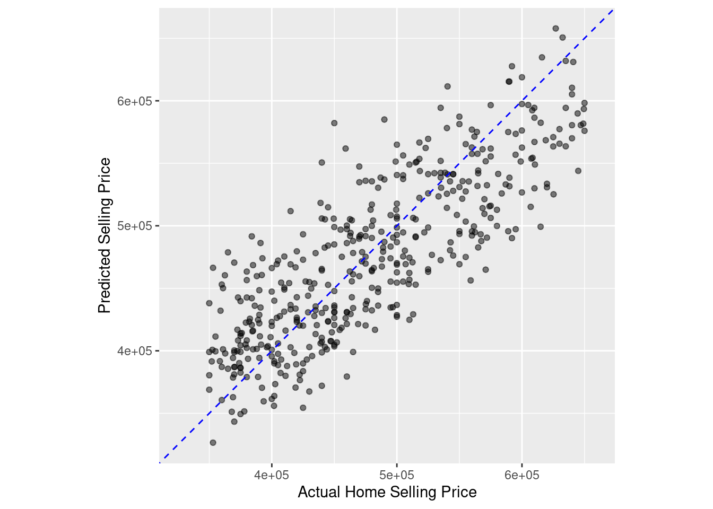
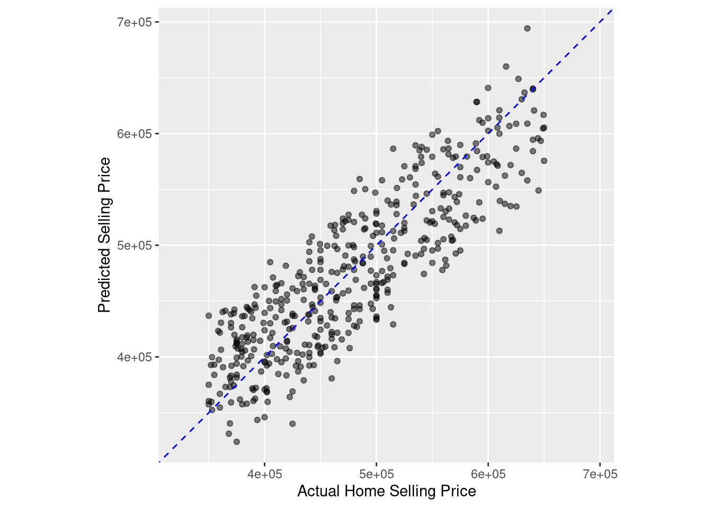

The rsample package is designed to create training and test datasets. Creating a test dataset is important for estimating how a trained model will likely perform on new data. It also guards against overfitting, where a model memorizes patterns that exist only in the training data and performs poorly on new data.
In this exercise, you will create training and test datasets from the home_sales data. This data contains information on homes sold in the Seattle, Washington area between 2015 and 2016.
The outcome variable in this data is selling_price.
The tidymodels package will be pre-loaded in every exercise in the course. The home_sales tibble has also been loaded for you.
Tidy model packages
home_sales <-readRDS("home_sales.rds")# Create a data split objecthome_split <-initial_split(home_sales, prop =0.7, strata = selling_price)# Create the training datahome_training <- home_split %>%training()# Create the test datahome_test <- home_split %>%testing()# Check number of rows in each datasetnrow(home_training)
[1] 1042
nrow(home_test)
[1] 450
Distribution of outcome variable values Stratifying by the outcome variable when generating training and test datasets ensures that the outcome variable values have a similar range in both datasets.
Since the original data is split at random, stratification avoids placing all the expensive homes in home_sales into the test dataset, for example. In this case, your model would most likely perform poorly because it was trained on less expensive homes.
In this exercise, you will calculate summary statistics for the selling_price variable in the training and test datasets. The home_training and home_test tibbles have been loaded from the previous exercise.
# Distribution of selling_price in training datalibrary(knitr)summary_func <-function(df){ df %>%summarize(min_sell_price =min(selling_price),max_sell_price =max(selling_price),mean_sell_price =mean(selling_price),sd_sell_price =sd(selling_price)) %>%kable()}home_training %>%summary_func()
min_sell_price
max_sell_price
mean_sell_price
sd_sell_price
350000
650000
478986.2
80915.09
home_test %>%summary_func()
min_sell_price
max_sell_price
mean_sell_price
sd_sell_price
350000
650000
479312.1
81216.26
Fitting a linear regression model
The parsnip package provides a unified syntax for the model fitting process in R.
With parsnip, it is easy to define models using the various packages, or engines, that exist in the R ecosystem.
In this exercise, you will define a parsnip linear regression object and train your model to predict selling_price using home_age and sqft_living as predictor variables from the home_sales data.
The home_training and home_test tibbles that you created in the previous lesson have been loaded into this session.
# Specify a linear regression model, linear_modellinear_model <-linear_reg() %>%# Set the model engineset_engine('lm') %>%# Set the model modeset_mode('regression')# Train the model with the training datalm_fit <- linear_model %>%fit(selling_price~ home_age + sqft_living,data = home_training)# Print lm_fit to view model informationtidy(lm_fit) %>%kable()
term
estimate
std.error
statistic
p.value
(Intercept)
291856.6392
7408.987519
39.392243
0
home_age
-1484.9767
174.432209
-8.513203
0
sqft_living
102.7973
2.678621
38.376944
0
Predicting home selling prices
After fitting a model using the training data, the next step is to use it to make predictions on the test dataset. The test dataset acts as a new source of data for the model and will allow you to evaluate how well it performs.
Before you can evaluate model performance, you must add your predictions to the test dataset.
In this exercise, you will use your trained model, lm_fit, to predict selling_price in the home_test dataset.
Your trained model, lm_fit, as well as the test dataset, home_test have been loaded into your session.
# Predict selling_pricehome_predictions <-predict(lm_fit,new_data = home_test)# View predicted selling prices#home_predictions# Combine test data with predictionshome_test_results <- home_test %>%select(selling_price, home_age, sqft_living) %>%bind_cols(home_predictions)# View resultshome_test_results %>%head()
Evaluating model results is an important step in the modeling process. Model evaluation should be done on the test dataset in order to see how well a model will generalize to new datasets.
In the previous exercise, you trained a linear regression model to predict selling_price using home_age and sqft_living as predictor variables. You then created the home_test_results tibble using your trained model on the home_test data.
In this exercise, you will calculate the RMSE and R squared metrics using your results in home_test_results.
The home_test_results tibble has been loaded into your session.
# A tibble: 1 × 3
.metric .estimator .estimate
<chr> <chr> <dbl>
1 rmse standard 48709.
# Calculate the R squared metrichome_test_results %>%rsq(truth = selling_price, estimate =.pred)
# A tibble: 1 × 3
.metric .estimator .estimate
<chr> <chr> <dbl>
1 rsq standard 0.640
R squared plot
In the previous exercise, you got an R squared value of 0.651. The R squared metric ranges from 0 to 1, 0 being the worst and 1 the best.
Calculating the R squared value is only the first step in studying your model’s predictions.
Making an R squared plot is extremely important because it will uncover potential problems with your model, such as non-linear patterns or regions where your model is either over or under-predicting the outcome variable.
In this exercise, you will create an R squared plot of your model’s performance.
The home_test_results tibble has been loaded into your session.
# Create an R squared plot of model performanceggplot(home_test_results, aes(x = selling_price, y = .pred)) +geom_point(alpha =0.5) +geom_abline(color ='blue', linetype =2) +coord_obs_pred() +labs(x ='Actual Home Selling Price', y ='Predicted Selling Price')

Complete model fitting process with last_fit()
In this exercise, you will train and evaluate the performance of a linear regression model that predicts selling_price using all the predictors available in the home_sales tibble.
This exercise will give you a chance to perform the entire model fitting process with tidymodels, from defining your model object to evaluating its performance on the test data.
Earlier in the chapter, you created an rsample object called home_split by passing the home_sales tibble into initial_split(). The home_split object contains the instructions for randomly splitting home_sales into training and test sets.
The home_sales tibble, and home_split object have been loaded into this session.
# Define a linear regression modellinear_model <-linear_reg() %>%set_engine('lm') %>%set_mode('regression')# Train linear_model with last_fit()linear_fit <- linear_model %>%last_fit(selling_price ~ ., split = home_split)# Collect predictions and view resultspredictions_df <- linear_fit %>%collect_predictions()predictions_df %>%head()
# Make an R squared plot using predictions_dfggplot(predictions_df, aes(x = selling_price, y = .pred)) +geom_point(alpha =0.5) +geom_abline(color ='blue', linetype =2) +coord_obs_pred() +labs(x ='Actual Home Selling Price', y ='Predicted Selling Price')

Data resampling
The first step in a machine learning project is to create training and test datasets for model fitting and evaluation. The test dataset provides an estimate of how your model will perform on new data and helps to guard against overfitting.
You will be working with the telecom_df dataset which contains information on customers of a telecommunications company. The outcome variable is canceled_service and it records whether a customer canceled their contract with the company. The predictor variables contain information about customers’ cell phone and internet usage as well as their contract type and monthly charges.
The telecom_df tibble has been loaded into your session.
telecom_df <-readRDS("telecom_df.rds")# Create data split objecttelecom_split <-initial_split(telecom_df, prop =0.75,strata = canceled_service)# Create the training datatelecom_training <- telecom_split %>%training()# Create the test datatelecom_test <- telecom_split %>%testing()# Check the number of rowsnrow(telecom_training)
[1] 731
nrow(telecom_test)
[1] 244
Fitting a logistic regression model
In addition to regression models, the parsnip package also provides a general interface to classification models in R.
In this exercise, you will define a parsnip logistic regression object and train your model to predict canceled_service using avg_call_mins, avg_intl_mins, and monthly_charges as predictor variables from the telecom_df data.
The telecom_training and telecom_test tibbles that you created in the previous lesson have been loaded into this session.
# Specify a logistic regression modellogistic_model <-logistic_reg() %>%# Set the engineset_engine('glm') %>%# Set the modeset_mode('classification')# Fit to training datalogistic_fit <- logistic_model %>%fit(canceled_service ~ avg_call_mins +avg_intl_mins+monthly_charges,data = telecom_training)# Print model fit objectlogistic_fit %>%tidy()
Evaluating your model’s performance on the test dataset gives insights into how well your model predicts on new data sources. These insights will help you communicate your model’s value in solving problems or improving decision making.
Before you can calculate classification metrics such as sensitivity or specificity, you must create a results tibble with the required columns for yardstick metric functions.
In this exercise, you will use your trained model to predict the outcome variable in the telecom_test dataset and combine it with the true outcome values in the canceled_service column.
Your trained model, logistic_fit, and test dataset, telecom_test, have been loaded from the previous exercise.
# Predict outcome categoriesclass_preds <-predict(logistic_fit, new_data = telecom_test,type ='class')# Obtain estimated probabilities for each outcome valueprob_preds <-predict(logistic_fit, new_data = telecom_test, type ='prob')# Combine test set resultstelecom_results <- telecom_test %>%select(canceled_service) %>%bind_cols(class_preds, prob_preds)# View results tibbletelecom_results %>%head()
# A tibble: 6 × 4
canceled_service .pred_class .pred_yes .pred_no
<fct> <fct> <dbl> <dbl>
1 yes no 0.366 0.634
2 yes no 0.143 0.857
3 no no 0.225 0.775
4 yes yes 0.556 0.444
5 no no 0.383 0.617
6 yes no 0.363 0.637
Evaluating performance with yardstick
In the previous exercise, you calculated classification metrics from a sample confusion matrix. The yardstick package was designed to automate this process.
For classification models, yardstick functions require a tibble of model results as the first argument. This should include the actual outcome values, predicted outcome values, and estimated probabilities for each value of the outcome variable.
In this exercise, you will use the results from your logistic regression model, telecom_results, to calculate performance metrics.
The telecom_results tibble has been loaded into your session.
# Calculate the confusion matrixconf_mat(telecom_results, truth = canceled_service,estimate = .pred_class)
Truth
Prediction yes no
yes 32 22
no 50 140
# Calculate the accuracyaccuracy(telecom_results, truth = canceled_service,estimate = .pred_class)
The yardstick package also provides the ability to create custom sets of model metrics. In cases where the cost of obtaining false negative errors is different from the cost of false positive errors, it may be important to examine a specific set of performance metrics.
Instead of calculating accuracy, sensitivity, and specificity separately, you can create your own metric function that calculates all three at the same time.
In this exercise, you will use the results from your logistic regression model, telecom_results, to calculate a custom set of performance metrics. You will also use a confusion matrix to calculate all available binary classification metrics in tidymodelsall at once.
The telecom_results tibble has been loaded into your session.
# Create a custom metric functiontelecom_metrics <-metric_set(accuracy, sens, spec)# Calculate metrics using model results tibbletelecom_metrics(telecom_results, truth = canceled_service,estimate = .pred_class)
Calculating performance metrics with the yardstick package provides insight into how well a classification model is performing on the test dataset. Most yardstick functions return a single number that summarizes classification performance.
Many times, it is helpful to create visualizations of the confusion matrix to more easily communicate your results.
In this exercise, you will make a heat map and mosaic plot of the confusion matrix from your logistic regression model on the telecom_df dataset.
Your model results tibble, telecom_results, has been loaded into your session.
# Create a confusion matrixconf_mat(telecom_results,truth = canceled_service,estimate = .pred_class) %>%# Create a heat mapautoplot(type ="heatmap")
ROC curves are used to visualize the performance of a classification model across a range of probability thresholds. An ROC curve with the majority of points near the upper left corner of the plot indicates that a classification model is able to correctly predict both the positive and negative outcomes correctly across a wide range of probability thresholds.
The area under this curve provides a letter grade summary of model performance.
In this exercise, you will create an ROC curve from your logistic regression model results and calculate the area under the ROC curve with yardstick.
Your model results tibble, telecom_results has been loaded into your session.
Streamlining the modeling process The last_fit() function is designed to streamline the modeling workflow in tidymodels. Instead of training your model on the training data and building a results tibble using the test data, last_fit() accomplishes this with one function.
In this exercise, you will train the same logistic regression model as you fit in the previous exercises, except with the last_fit() function.
Your data split object, telecom_split, and model specification, logistic_model, have been loaded into your session.
# Train model with last_fit()telecom_last_fit <- logistic_model %>%last_fit(canceled_service ~ avg_call_mins +avg_intl_mins+monthly_charges,split = telecom_split)# View test set metricstelecom_last_fit %>%collect_metrics()
Collecting predictions and creating custom metrics
Using the last_fit() modeling workflow also saves time in collecting model predictions. Instead of manually creating a tibble of model results, there are helper functions that extract this information automatically.
In this exercise, you will use your trained model, telecom_last_fit, to create a tibble of model results on the test dataset as well as calculate custom performance metrics.
You trained model, telecom_last_fit, has been loaded into this session.
In this exercise, you will use the last_fit() function to train a logistic regression model and evaluate its performance on the test data by assessing the ROC curve and the area under the ROC curve.
Similar to previous exercises, you will predict canceled_service in the telecom_df data, but with an additional predictor variable to see if you can improve model performance.
The telecom_df tibble, telecom_split, and logistic_model objects from the previous exercises have been loaded into your workspace. The telecom_split object contains the instructions for randomly splitting the telecom_df tibble into training and test sets. The logistic_model object is a parsnip specification of a logistic regression model.